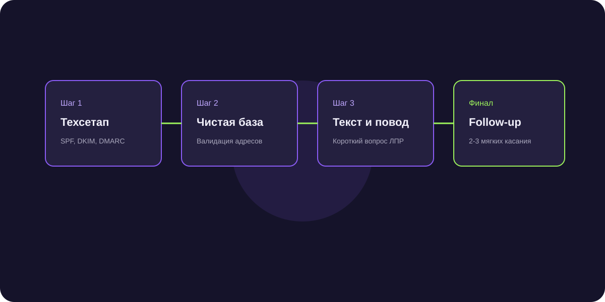

ИИ-рассылки с гиперперсонализацией: как писать каждому ЛПР уникальные сообщения
Шаблонные рассылки по базам улетают в спам с конверсией 0,2%. Генеративный ИИ создает уникальный текст для каждого адресата с опорой на новости и вакансии его бизнеса.

Короткий ответ
ИИ-рассылка с динамической подстановкой — это технология создания уникального первого контакта для каждого получателя, где нейросеть изучает сайт адресата, его профиль в соцсетях или открытые вакансии и формулирует точечный повод для знакомства («Заметил, что вы открыли новый склад в Казани...»).
Почему обычная подстановка имени {{First_Name}} больше не работает
Каждый руководитель понимает, что обращение «Иван, здравствуйте» генерируется сервисом рассылок. Настоящая персонализация затрагивает актуальные бизнес-события компании.
3 источника фактов для создания персонального крючка внимания
ИИ извлекает инфоповоды из трех ключевых каналов:
- Свежие вакансии на hh.ru (сигнализируют о росте или узких местах).
- Новости и пресс-релизы на корпоративном сайте.
- Публичные посты ЛПР в Telegram-каналах и VC.ru.
Рост конверсии в ответ с 1,5% до 18%
Персональный подход превращает спам в адресное деловое предложение, вызывая уважение адресата к проделанной предварительной работе.
Частые вопросы по теме
Сколько времени уходит на подготовку одной персонализированной рассылки?
ИИ обрабатывает базу из 500 контактов за 15–20 минут, создавая 500 абсолютно уникальных текстов.
Не попадет ли такая рассылка под спам-фильтры?
Уникальность текста каждого письма на 95% наоборот защищает домен от попадания в спам-фильтры почтовых систем.
Reply Rate 22% по холодной базе генеральных директоров
Агентство по кибербезопасности запустило персонализированный аутрич с упоминанием используемого стека на сайтах клиентов. Было назначено 38 встреч со 180 отправок.